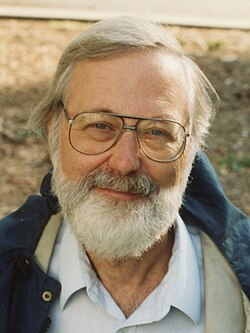

1931-
John Milnor

Portrait: George Bergman, CC BY-SA 4.0, Wikimedia Commons.
Events (9)
- 1944Chern: intrinsic Gauss-Bonnet and characteristic classes
systematiser · Differential geometry
- 1945Axiomatic homology
developer · Algebraic topology
- 1954Cobordism: homotopy computes manifold invariants
developer · Topology
- 1956Exotic spheres: algebraic topology reaches differential structures
originator · Topology
- 1957Bott periodicity: Morse theory on loop spaces computes homotopy of Lie groups
systematiser · Topology
- 1960Handle decompositions and the high-dimensional Poincare (h-cobordism) theorem
popularizer · Topology
- 1960Kervaire invariant one problem (solved by equivariant homotopy)
developer · Topology
- 1961Surgery theory (controlled modification of manifolds)
originator · Topology
- 1973Higher algebraic K-theory
developer · Algebraic topology